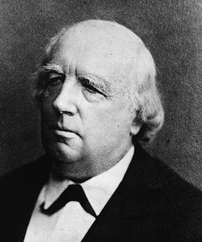

Karl Theodor Weierstrass (31 octobre 1815 [Ostenfelde] - 19 février 1897 [Berlin])
Karl Theodor Weierstrass était, aux dires de son collègue Hermite, le législateur de l'analyse. Ce qualificatif de législateur n'est pas associé aux études de droit que Weierstrass a menées, mais à la rigueur nouvelle qu'il a imposée : qu'a-t-on, et que n'a-t-on pas le droit de faire en analyse ?
Karl Weierstrass est né le 31 octobre 1815 à Ostenfelde (qui se trouvait dans la province de Westphalie du Royaume de Prusse, province dont la capitale était Münster). Son père était inspecteur des impôts, et père de 4 enfants dont bizarrement aucun ne s'est marié. Au lycée, Weierstrass est très brillant, et il acquiert des compétences en mathématiques déjà très intéressantes. En dépit de cela, son père le contraint à suivre des études de droit et d'économie. Mais Weierstrass ne fréquente guère les amphithéâtres, et au lieu de cela s'adonne à l'escrime, à la boisson et aux mathématiques. Après quatre ans à l'université de Bonn, il ressort sans le moindre diplôme. Néanmoins, son père consent à financer encore deux ans d'étude à l'Académie théologique et philosophique de Munster, afin que Weierstrass puisse obtenir les titres nécessaires au professorat dans le secondaire. À Münster, Weierstrass rencontre Guddermann, qui l'éveillera complètement aux mathématiques. Une grande estime mutuelle caractérisera la relation entre les deux hommes.
À compter de 1842, Karl Weierstrass est donc professeur dans le secondaire, et il occupe successivement des postes en Poméranie occidentale puis en Prusse-orientale. Loin de toute communauté scientifique active, il poursuit seul des recherches sur les fonctions elliptiques entreprises dès Münster. Il publie quelques articles dans le journal de son école, mais ils sont incompris de ses collègues, et ignorés par les mathématiciens. Ce n'est qu'en 1854, à près de 40 ans (on est loin des génies précoces !) que Weierstrass accède d'un coup à la célébrité grâce à son article Zur Theorie des Abelschen Functionen qu'il publie dans le prestigieux Journal de Crelle. Il y résume l'essentiel des découvertes qu'il a faites au cours des quinze dernières années à propos des fonctions abéliennes. Quasi immédiatement, il est fait docteur honoris causa de l'université de Königsberg. En 1856, il obtient une chaire à Berlin, tandis qu'il publie la version complète de son premier article.
L'université de Berlin, où se côtoient Weierstrass, Kümmer et Kronecker, devient alors la plus prestigieuse du monde dans le domaine des mathématiques. Aux cours très réputés de Weierstrass se pressent les meilleurs étudiants européens. Parmi eux, il y a Sonia Kovaleskaya, que Weierstrass instruit à part car elle n'a pas le droit de s'inscrire à l'Université. Il contribuera énormément à ce qu'elle puisse obtenir le titre de docteur de l'Université de Göttingen, et un poste à Stockholm.
L'œuvre mathématique de Weierstrass commence par la théorie des fonctions abéliennes et elliptiques : il donne une théorie complète de l'inversion des intégrales hyperelliptiques. Weierstrass se signale aussi par sa volonté d'algébrisation de l'analyse. Les principes de la théorie des fonctions doivent reposer selon lui sur des principes algébriques clairs. C'est ainsi que Weierstrass donne les premières définitions claires et rigoureuses des nombres réels, de la continuité. En passant, il découvre une fonction continue nulle part dérivable, ce qui choquera beaucoup l'intuition des analystes de l'époque.
Weierstrass contribue également grandement à la théorie des fonctions analytiques, qu'il définit comme étant des sommes de puissances, convergentes à l'intérieur d'un disque (les séries entières). Il y démontre les théorèmes de dérivation terme à terme, le principe du prolongement analytique.
La fin de la vie de Weierstrass est assez pénible. Dès 1850, il souffre de graves problèmes de santé, qui sont peut-être les conséquences de ses excès de jeunesse. En 1861, il est victime d'une attaque qui l'éloigne de ses cours pendant un an. À compter de cette date, il se contentera de dicter ses cours assis, en laissant le soin à un étudiant d'écrire au tableau.
Puis, deux événements vont gravement le marquer. D'abord, en 1877, il s'oppose assez violemment à son collègue et pourtant ami Kronecker au sujet des découvertes troublantes de Georg Cantor. Ensuite, Sonia Kovaleskaya, qu'il avait tant aidée, et avec qui il avait échangé une nombreuse correspondance, décède en 1891. Weierstrass est très affecté, et brûle même toutes ses lettres. Il passe ses 3 dernières années dans un fauteuil roulant, et décède le 19 février 1897 à Berlin.